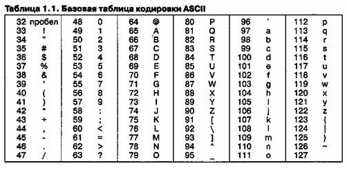

| Тема 1. Строки и символы. | ||||||||||||||||||||||||||||||||||||||||||||||||||||||
| Назад | ||||||||||||||||||||||||||||||||||||||||||||||||||||||
|
До этого времени мы обходились числовыми данными: целыми
(integer) И вещественными(real). Пришло время разобраться с символами и строками. Символьный тип данных: сhar Все символы закодированы в таблице символов и именно с ее помощью и распознаются значения нажатых клавиш. Каждый символ занимает 1 байт памяти.
 Для работы с символами нам достаточно двух функций: СHR и ORD. CHR- определяет символ по коду. Пример: write(chr(65)); выведет букву А. ORD-определяет код по символу. write(ord('A')); выведет 65 (номер буквы А в таблице)
Строка — это последовательность символов. Количество символов в строке называется ее длиной. Длина строки может находиться в диапазоне от 0 до 255. Описываем строку с явным или неявным заданием ее длины, вводим и выводим как обычно. Для работы со строками будем использовать 4 функции и 4 процедуры.
Функции и
процедуры работы со строками
Функция Copy(S, Pozition, N) выделяет из строки S подстроку длиной N символов, начиная с позиции Pozition. Здесь N и Pozition — целочисленные выражения.
Функция Concat(S1, S2, …, SN) выполняет сцепление (конкатенацию) строк S1, S2, …, SN в одну строку.
Функция Length(S) — определяет текущую длину строки S. Результат — значение целого типа.
Функция Pos(S1, S2) — обнаруживает первое появление в строке S2 подстроки S1. Результат — целое число, равное номеру позиции, где находится первый символ подстроки S1. Если в S2 подстроки S1 не обнаружено, то результат равен 0.
Процедура Delete(S, Poz, N) — удаление N символов из строки S, начиная с позиции Poz.
В результате выполнения процедуры уменьшается текущая длина строки в переменной S. Процедура Insert(S1, S2, Poz) — вставка строки S1 в строку S2, начиная с позиции Poz.
Процедура Str (x,s)- преобразует число X в строку s K:=5; str(k,s3); Процедура Val(s,v,code)- преобразует строку s в значение числовой переменной v,(если это возможно , то code-0 иначе Code<>0) S:='1234', val(s,k,c); |
||||||||||||||||||||||||||||||||||||||||||||||||||||||
| Конспект подготовлен Бакулиным А. М. 2008 год. | ||||||||||||||||||||||||||||||||||||||||||||||||||||||